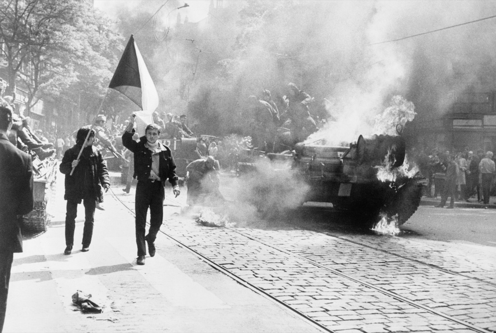

Prag in vier Bildern





Wo sind wir, und welche Staaten gab es?
Prag liegt an der Moldau und war das Zentrum Böhmens. Böhmen, Mähren und ein Teil Schlesiens gehören heute zu Tschechien. Nach dem Ersten Weltkrieg entstand 1918 die Tschechoslowakei, ein gemeinsamer Staat von Tschechen und Slowaken, in dem auch viele andere Bevölkerungsgruppen lebten. Seit 1993 sind Tschechien und die Slowakei eigenständige Staaten.
Beginne mit der Staatsgründung von 1918. Lies den Kapiteltext, untersuche ein Bild, einen Film oder eine Tonaufnahme und vergleiche deine Beobachtungen mit der Musterlösung. Zur Vorgeschichte vor 1918